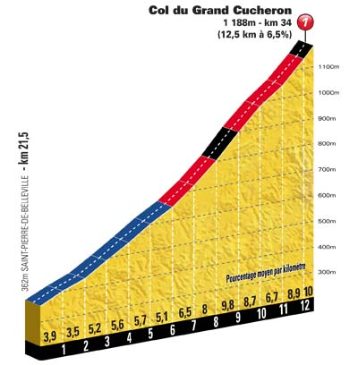
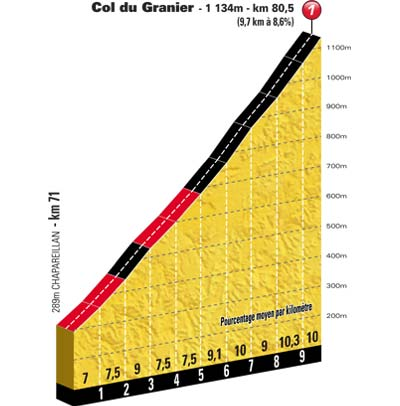

Classement
Parcours
Profil
Côtes
Dernier Km
Km 34.0 - Col du Grand Cucheron (1 188 m) - 12.5 km de montée à 6.5 % - Catégorie 1
Km 80.5 - Col du Granier (1 134 m) - 9.7 km de montée à 8.6 % - Catégorie 1
Km 207.5 - Côte d'Ardoix - 5.9 km de montée à 3.4 % - Catégorie 3
 
Etape précédente
Retour
Etape suivante